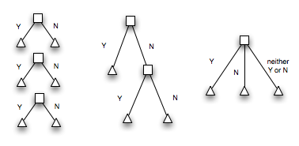

if statements allow for the conditional execution of code:
if some_boolean_expression:
print("do something")if-else statements will execute one block of code if the condition is true… or another block if it's false:
if some_boolean_expression:
print("do something")
else:
print("do another thing")We can use elif to chain together a series of conditions. This allows us to create multiple flows of execution (more than two), but - at most - only one path will be executed (even if more than one condition is true).
Let's see what it looks like…
if condition_1:
print("do something")
elif condition_2:
print("do another thing")
elif condition_3:
print("...and another thing")
elif condition_n:
print("actually, any artibtrary number of things!")
else:
print("else clause is optional")
print("for conditions not caught above")Translate an athlete's finishing placement (1st, 2nd and 3rd) into its Olympic medal value: 1 for gold, 2 for silver, 3 for bronze and anything else means no medal →. Do this by asking for user input. For example:
What number should I translate into a medal?
>1
gold
What number should I translate into a medal?
>3
bronze
What number should I translate into a medal?
>23
no medal for you!"""Translate place number into Olympic medal. FTW!"""
place = int(input('What number should I translate into a medal?\n>'))
if place == 1:
medal = "gold"
elif place == 2:
medal = "silver"
elif place == 3:
medal = "bronze"
else:
medal = "no medal for you!"
print(medal)Let's do the cake exercise again using elif… →
Do you want cake?
> yes
Here, have some cake.
# > no ... no cake for you
# > bleargh ... i don't understand"""Ask me if I want cake, I *dare* you to."""
answer = input("Do you want cake?\n> ")
if answer == 'yes':
print("Here, have some cake.")
elif answer == 'no':
print("No cake for you.")
else:
print("I do not understand.")We could have impemented this using consecutive if statements. →
answer = input("Do you want cake?\n> ")
if answer == 'yes':
print("Here, have some cake.")
if answer == 'no':
print("No cake for you.")
if answer != 'yes' and answer != 'no':
print("I do not understand.")You can actually nest if statements within each other:
if condition_1:
print("condition 1 is true!")
# nested if!
if condition_2:
print("in 2")
else:
print("condition 1 is not true!")We could have impemented this using nested if statements. →
answer = input("Do you want cake?\n> ")
if answer == 'yes':
print("Here, have some cake.")
else:
if answer == 'no':
print("No cake for you.")
else:
print("I do not understand.")What do you think the decision trees look like?. → (Oh, and BTW, what's a decision tree? …It's a graph that shows all possible decisions and the outcomes of those decisions.)

We could make an educated guess. →
Do you want cake?
> maybe
So, call me.
Do you want cake?
> yes
Here, have some cake.
Do you want cake?
> yeah
Here, have some cake."""Ask me if I want cake, I *dare* you to."""
answer = input("Do you want cake?\n> ")
if answer == 'yes' or answer == 'yeah':
print("Here, have some cake.")
elif answer == 'no':
print("No cake for you.")
elif answer == 'maybe':
print("So, call me.")
else:
print("I do not understand.")Write a program that names the rolls of two dice in a dice game called craps… →
What roll did you get for the first die?
> 1
What roll did you get for the second die?
> 1
Snake Eyes!
What roll did you get for the first die?
> 1
What roll did you get for the second die?
> 3
Easy Four""" Name that craps roll! (well, at least four of them)
http://en.wikipedia.org/wiki/Craps#Rolling"""
d1 = int(input("What roll did you get for the first die?\n> "))
d2 = int(input("What roll did you get for the second die?\n> "))
if d1 == 1 and d2 ==1:
print("Snake Eyes!")
elif d1 == 1 and d2 == 3 or d1 == 3 and d2 == 1:
print("Easy Four")
elif d1 == 2 and d2 == 2:
print("Hard Four")
else:
print("I don't know that roll yet")The coffee shop has a special for half price pastries on Fridays after 4 (16:00… or 16). Ask for day and time, and make a recommendation (buy now, wait x hours or don't buy). →
What day is it (ex Thursday, Friday, etc.)?
> Friday
What time is it (in 24 hour time)?
> 17
Go ahead, you deserve a treat
What day is it (ex Thursday, Friday, etc.)?
> Friday
What time is it (in 24 hour time)?
> 12
Just wait 4 more hours""" pastry buying guide """
day = input("What day is it (ex Thursday, Friday, etc.)?\n> ")
time = int(input("What time is it (in 24 hour time)?\n> ")) # not adventure
delicious_time = 16
if day == 'Friday':
if time >= delicious_time:
print("Go ahead, you deserve a treat")
else:
print("Just wait %s more hours" % (delicious_time - time))
else:
print("Don't do it! Just don't.")The intention of the following code is to:
What gets printed if n = 200? What if n = 101? →
if n > 100:
print("more than 100")
elif n == 101:
print("exactly 101")200 → more than 100, 101 → more than 100
Of course, we could fix this. There are a few ways… →
if n == 101:
print("exactly 101")
elif n > 100:
print("more than 100")
if n > 100 and n != 101:
print("more than 100")
elif n == 101:
print("exactly 101")A way to get rid of not operators is to use the opposite logical operator:
Logical Opposites from How to Think Like a Computer Scientist
Examples of logical opposites:
Consequently
How can we rewrite this without the not?→
# Example from How to Think Like a Computer Scientist
if not (age >= 17):
print("Hey, you're too young to get a driving licence!")if age < 17:
print("Hey, you're too young to get a driving licence!")Let's try truth tables for these! →
x | y | not (x and y) x | y | (not x) or (not y)
===================== =========================
t | t | f t | t | f
t | f | t t | f | t
f | t | t f | t | t
f | f | t f | f | t
x | y | not (x or y) x | y | (not x) and (not y)
==================== ===========================
t | t | f t | t | f
t | f | f t | f | f
f | t | f f | t | f
f | f | t f | f | tHow can we rewrite this fragment of code from How to Think Like a Computer Scientist?→
# "suppose we can slay the dragon only if our magic lightsabre sword
# is charged to 90% or higher, and we have 100 or more energy units
# in our protective shield."
if not ((sword_charge >= 0.90) and (shield_energy >= 100)):
print("Your attack has no effect, the dragon fries you to a crisp!")
else:
print("The dragon crumples in a heap. You rescue the gorgeous princess!")# first... demorgan's:
if not (sword_charge >= 0.90) or not (shield_energy >= 100):
# ...# next... logical opposites:
if (sword_charge < 0.90) or (shield_energy < 100):
# ...See this crazy chart on the intrinsic boolean value of various types. The following values are considered false:
a = ""
if a:
print("true!")
a = 0
if a:
print("true!")
a = "foo"
if a:
print("true!")What's the difference between the following two code samples?→
# sample 1
answer = 'no'
if answer == 'yes' or answer == 'YES' or answer == 'Yes':
print('you said yes')
else:
print('you said no')
# sample 2
if answer == 'yes' or 'YES' or 'Yes':
print('you said yes')
else:
print('you said no')
answer = 'no'# boolean expression in sample 1
answer == 'yes' or answer == 'YES' or answer == 'Yes':
# boolean expression in sample 2
answer == 'yes' or 'YES' or 'Yes':b = True
# instead of if b == True
if b:
print("b")
s = "catz!"
# to test if the value is not empty string
# (rather than s != "")
if s:
print(s)Write a program to ask a couple of questions about the book, Dune. →
# ______ _ _______
# ( __ \ |\ /|( ( /|( ____ \
# | ( \ )| ) ( || \ ( || ( \/
# | | ) || | | || \ | || (__
# | | | || | | || (\ \) || __)
# | | ) || | | || | \ || (
# | (__/ )| (___) || ) \ || (____/\
# (______/ (_______)|/ )_)(_______/
#
# What is the name of the desert planet that's informally called Dune?
# > Arrakis
# You got it right!
# What valuable resource is only found on Dune?
# > cheese?
# Nope, the answer is: spice
# You got 1 questions right! Let's get some requirements down:
So, first, what's our plan? →
What are some ways that we can be more tolerant about capitalization? That is… what if we wanted to accept these answers:
Another wrinkle might be to have different output based on which version of the right answer was chosen. For example, if someone puts in spice, it might say, "oh, you mean, the spice melange".